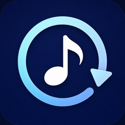
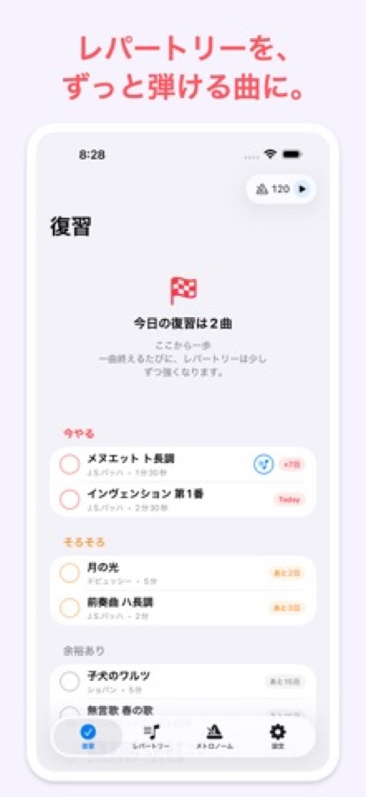
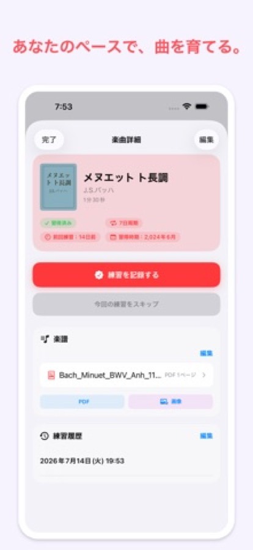
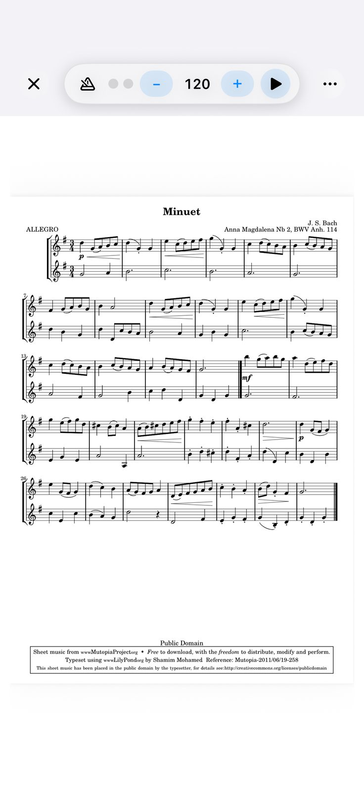
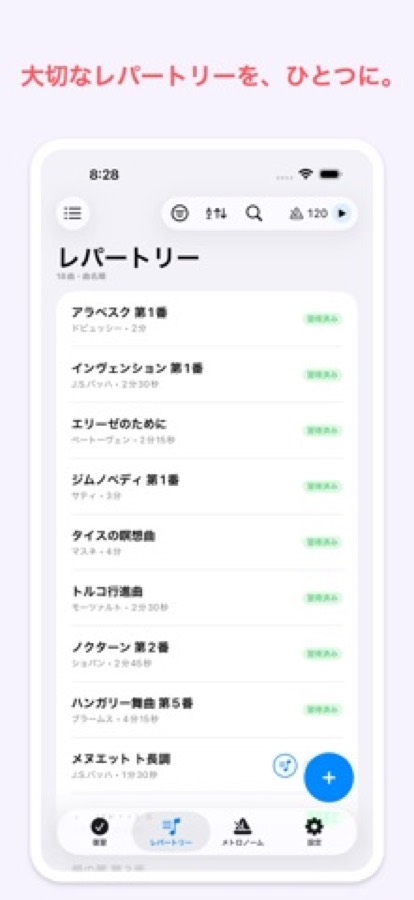
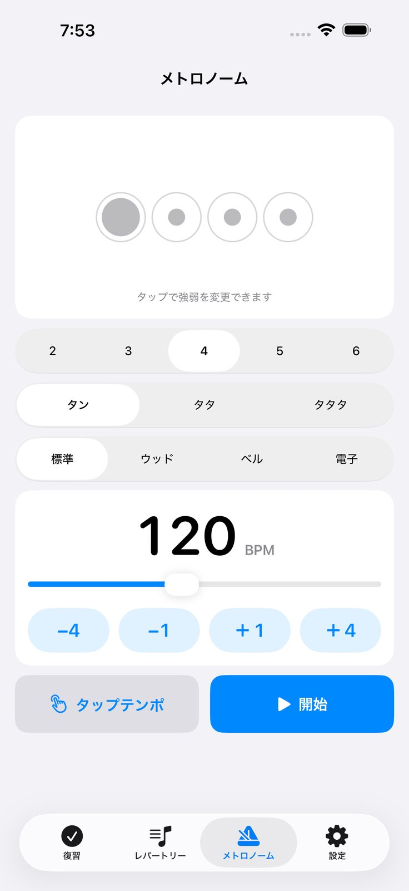

覚えた曲を、忘れないために。
練習の記録と復習の周期から、今日弾く曲を静かに教えてくれます。





弾けるようになった曲ほど、いつのまにか指から抜けていきます。RePlay は、曲ごとの練習記録と復習の周期から「今日やる」「そろそろ」「余裕あり」を並べ替えて、レパートリーを保ち続けるための道具です。
前回の練習からの経過と曲ごとの復習周期から、今日やるべき曲を上に並べます。見送るときは明日以降へずらせます。
PDF・JPEG・PNG を曲に追加して並べ替えられます。複数の画像を1つの楽譜としてページ順に表示できます。
テンポ、拍子、音色を選べます。曲の画面から離れずに呼び出せます。
曲に表紙画像を設定できます。一覧の見た目は5種類から選べます。
曲、練習記録、表紙、楽譜を自分の端末間で同期します。同期した内容は開発者からは見えません。